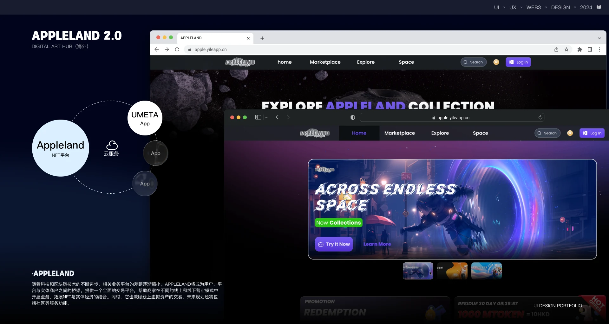
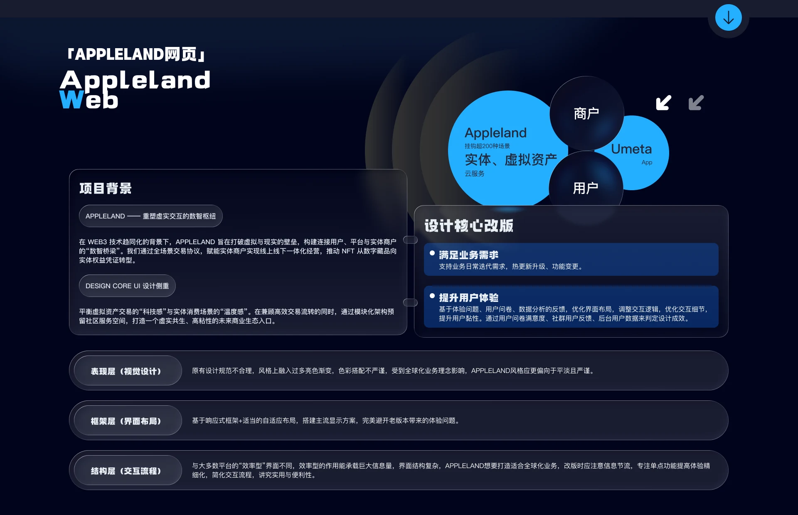
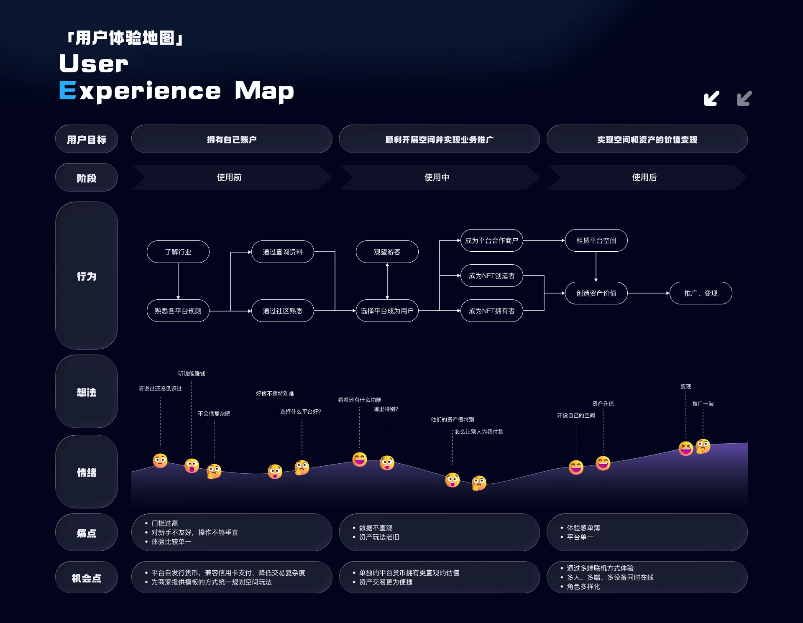
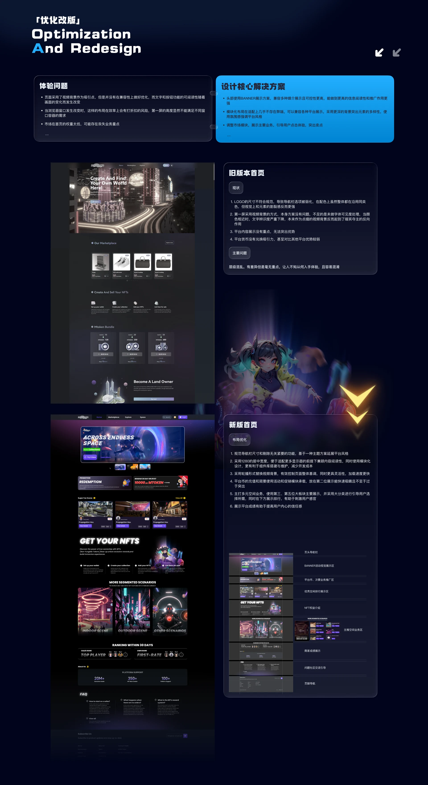
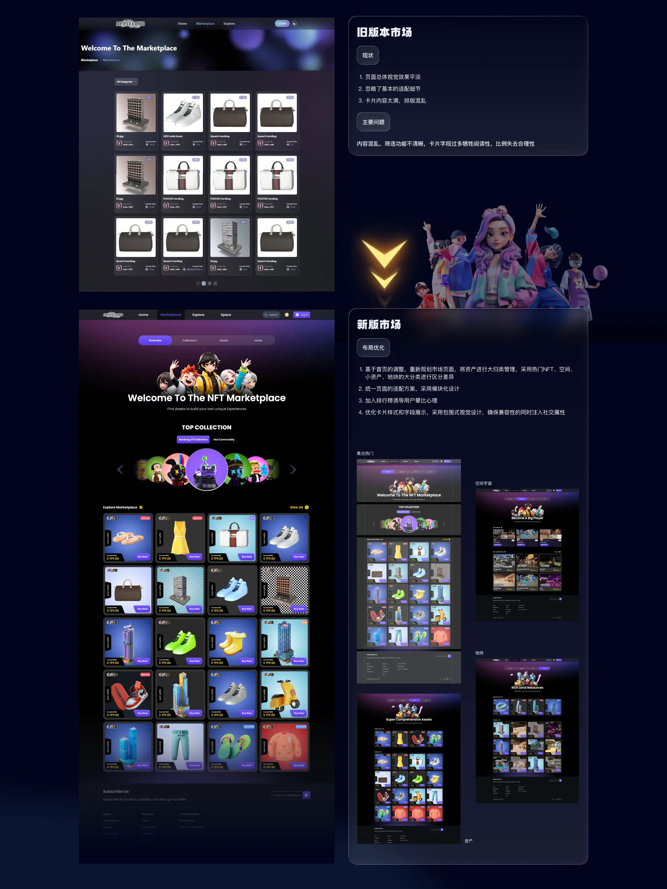
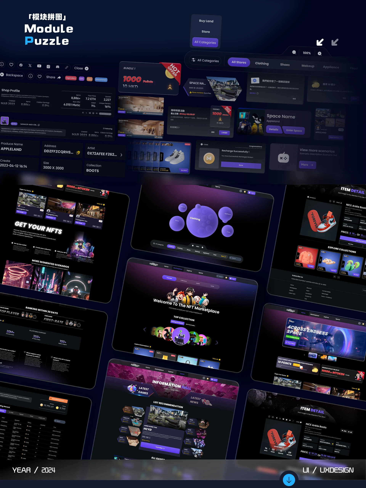

06 / 系统设计 / 2023.07-2024.02
Appleland Web
Appleland（Web3 NFT 实体/虚拟资产交易平台）
项目背景
Appleland将成为用户、平台与实体商户之间的桥梁，提供一个全面的交易平台，帮助商家在不同的线上和线下营业模式中开展业务，拓展NFT与实体经济的结合。同时，它也兼顾线上虚拟资产的交易，未来规划还将包括社区等服务功能。
问题所在
在 Web3 技术趋同化的背景下，Appleland 旨在打破虚拟与现实的壁垒，构建连接用户、平台与实体商户的“数智桥梁”。我们通过全场景交易协议，赋能实体商户实现线上线下一体化经营，推动 NFT 从数字藏品向实体权益凭证转型。
设计核心改版
满足业务需求，基于体验问题、用户问卷、数据分析的反馈，优化界面布局，调整交互逻辑，优化交互细节，提升用户黏性。通过用户问卷满意度、社群用户反馈、后台用户数据来判定设计成效。
调优路径
- 表现层（视觉设计）
- 框架层（界面布局）
- 结构层（交互流程）
我的职责
主导 Appleland 平台从 0 到 1 的视觉重构，用 Design Tokens 建立与前端的逻辑映射，实现 95% 以上的高保真开发还原。 针对链上延迟设计阶梯式反馈机制，等待过程中给出明确进度，不让界面空转。 用 AIGC 优化出图流程，视觉资产产出周期缩短 50%。
界面展示






其他作品
- 领克数云 · 全平台2024 - 2026
- KEKE · IP 设计2025.03
- 畅听助手 APP2020.01 - 2023.05
- 小沃无障碍通话助手2020.01 - 2023.05
- Umeta 2.12023.07 - 2024.02
- 模友圈2022.08 - 2023.01
- 智屏2021.07 - 2023.01
- 企业官网设计2020 - 2023
有项目要一起做？
可承接 UI/UX 设计外包与兼职合作：B 端后台与数据平台界面设计、微信小程序与移动端界面、无障碍与适老化设计、交互原型与设计规范交付，支持远程协作。
邮箱 965333099@qq.com ｜ 微信与手机同号 18666099550